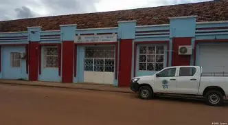

Entende-se como ambiente, o local onde os organismos vivos são capazes de sobreviver, apresentando seus ciclos de vida de forma ordenada (eg. ecossistemas florestais, marinhos, dulceaquícolas, entre outros). Preservar o ambiente é um acto importante não só para a humanidade, como também para todos os seres que habitam o Planeta Terra. Afinal, é nela que estão os recursos naturais necessários para a sua sobrevivência, como a água, os alimentos e as matérias-primas. Sem esses recursos, todas as formas de vida do planeta poderão acabar. Ao longo da existência humana, muitos recursos naturais foram degradados duma forma desenfreada. Isso ocorreu devido as acções incontroladas do homem sobre o ambiente, entre os quais, a queima de combustíveis fósseis que exacerbou as alterações climáticas e o aquecimento global. Outras acções humanas que têm contribuído para a degradação ambiental são as deposições e rejeições desordenadas de resíduos e efluentes nos cursos de água (rios e mares), o crescimento desordenado das cidades, a ocupação desenfreada das zonas húmidas, a gestão hídrica inadequada, a queima e destruição de matas e florestas, entre outras. Por isso é necessário e urgente que todos nós façamos a nossa parte para a preservação do ambiente, proporcionando mais saúde e acesso aos recursos necessários para a sobrevivência de todos os seres na planeta. A população guineense é tributária directa dos seus recursos naturais, tanto o nivel macroeconomico como o nivel local. A agricultura e as actividades ligadas à exploração dos recursos marinhos constituem a base do desenvolvimento económico do país. A criação do Ministério do Ambiente e Biodiversidade veio dar corpo ao engajamento político sem precedentes na senda da coordenação das acções ambientais, traduzido nos preceitos da conservação ambiental e de demais valores e em respeito aos comprimissos internacionais assumidos, de modo coerente. Deve ainda trabalhar em sinergia com outras instituições chaves na implementação dos compromissos internacionais assumidos pela Guiné Bissau, a saber: Todas as Convenções Internacionais no domínio do Ambiente, a Agenda 2030 das Nações Unidas sobre o Desenvolvimento Sustentável, a Agenda 2063 da União Africana, o Roteiro de SAMOA, a New Deal e o Acordo de Paris sobre o novo regime climático. O País decretou 26,3% do seu território nacional como áreas protegidas, isso demonstra o seu engajamento em assumir os compromissos emanados na Convenção das Nações Unidas sobre a Diversidade Biológica e no Plano Estratégico para a Biodiversidade (2011-2020). No entanto devemos todos empreender esforços no sentido de implementar todos os compromissos assumidos para a salvaguarda do ambiente – a Nossa Casa Comum, com o propósito de deixar um legado precioso para gerações presentes e futuras.

O Decreto Presidencial n.º 4 /2020, de 2 de Março que nomeou o actual Governo para dirigir o país até ao fim da presente legislatura, traz consigo inovações substanciais e de sublime importância que merecem enaltecer. Posto isso, resta-nos admitir que esta inovação carrega consigo o espirito visionário e de reconhecimento por parte do actual Executivo, pois, só vem demonstrar o quão é urgente e importante o país estar dotado de estrutura ambiental robusta e competente com vista a fazer face aos desafios e compromissos internacionais assumidos pelo Estado no domínio em questão. Com isto, impõe-se a necessidade de reestruturar internamente o Ministério do Ambiente e Biodiversidade com Serviços centralizados que permitem racionalizar as funções de comando e estruturas de apoio, reforçando a especialização de cada serviço de acordo com a sua função específica e, com isto, promover a eficiência no uso dos recursos comuns. Assim, estarão criadas todas as condições para a consolidação e racionalização permanente dos serviços internos deste departamento governamental de modo a que os mesmos fiquem mais eficientes para poderem cumprir com os desígnios do almejado desenvolvimento sustentável.